Creating a simple part with Part WB/es
| Topic |
|---|
| Modeling |
| Level |
| Beginner |
| Time to complete |
| 2 hours |
| Authors |
| heda |
| FreeCAD version |
| 0.19 or above |
| Example files |
| See also |
| Creating a simple part with PartDesign, Creating a simple part with Draft and Part WB |
Introduction
Este tutorial pretende ser una primera introducción al modelado 3D utilizando el Banco de trabajo de pieza 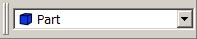
{kind=link}
Antes de comenzar, por favor, vea cómo navegar en el espacio 3D. Al pasar el cursor sobre el selector de modelo de ratón en la esquina inferior derecha de la ventana de FreeCAD (inicialmente etiquetado como 'CAD'), aparece una guía rápida del modelo de ratón actual, como se muestra en la imagen a continuación.
{kind=link}
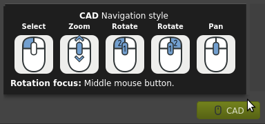
Muchos principiantes en programas CAD se atascan al aprender a usar el software. Si te ocurre esto, busca información en la wiki o el foro; es probable que otros usuarios también se hayan encontrado con el mismo problema, así que ya existe una respuesta a tu pregunta. También puedes publicar tus preguntas o hallazgos en el foro. El foro cuenta con varios hilos donde se ayuda a los usuarios a completar diversas tareas. Estos hilos suelen funcionar como tutoriales e incluyen ilustraciones.
El tutorial cubre
- El modelo a crear
- Usar el Entorno de trabajo de piezas para crear y manipular los bloques de construcción primitivos
- Cambiar el color y la transparencia
- Una forma diferente de ubicar el agujero
- Convertir el agujero en un agujero avellanado
- Una forma diferente de posicionar el chaflán
- Editar las dimensiones
- Organizar el árbol de forma ligeramente diferente
- Conclusión
El modelo a realizar


Uso del banco de trabajo de pieza para crear y manipular los bloques de construcción primitivos
Cree un nuevo documento y guárdelo directamente con un nombre nuevo. Es recomendable guardar el documento a intervalos regulares o justo antes de realizar operaciones más complejas. A continuación, acceda al Part Workbench mediante el selector de la interfaz (etiquetado como 10 en la imagen adjunta) o accediendo al menú View → Workbench'. FreeCAD se iniciará con las barras de herramientas en la parte superior, la vista combinada a la izquierda y la vista 3D a la derecha.
Crear el bloque sólido principal
Pulsa  Cube para crear un cubo sólido predeterminado. El cubo aparece en la Vista 3D y también como un nuevo objeto en la Vista de árbol de la barra lateral.
Cube para crear un cubo sólido predeterminado. El cubo aparece en la Vista 3D y también como un nuevo objeto en la Vista de árbol de la barra lateral.
Pulse  Isometric para ver el cubo en 3D.
Isometric para ver el cubo en 3D.
{kind=link}
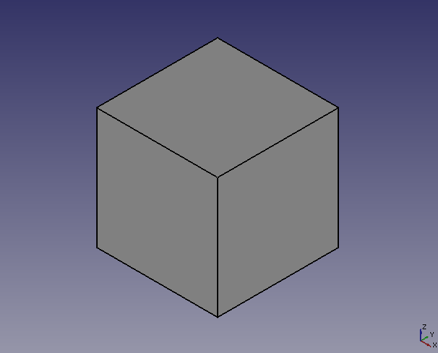
Seleccione el cubo en la vista de árbol; se pondrá verde en la vista 3D. Debajo de la vista de árbol, verá que el cubo se crea por defecto con las dimensiones Largo x Ancho x Alto de 10 x 10 x 10 mm. Cambie esas dimensiones a 100 x 30 x 50 según el dibujo inicial del modelo.
{kind=link}
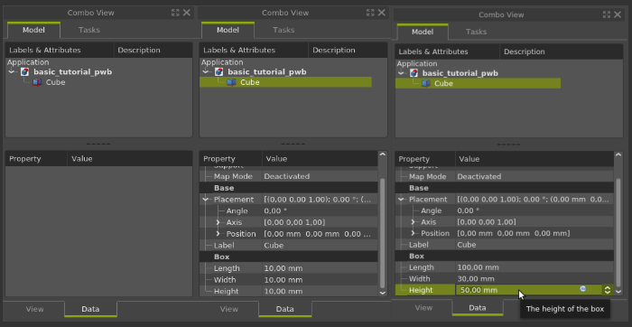
Al modificar una propiedad, como «Longitud», mediante el cuadro de selección, se pueden introducir los valores manualmente o usar la rueda del ratón para aumentarlos o disminuirlos. También se pueden usar las flechas para aumentar o disminuir los valores. En la imagen de la derecha, la propiedad «Altura» está en modo de edición; al girar la rueda del ratón sobre esa celda, el valor se incrementará o disminuirá en uno.
Haz clic en  Ajustar todo para ver el cubo completo.
Ajustar todo para ver el cubo completo.
{kind=link}
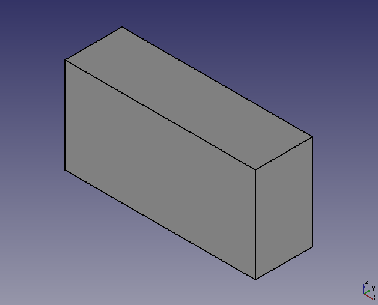
Crear el filete
Para crear el redondeo de esquina, en la barra de herramientas pulse  Fillet, lo que abrirá el panel de tareas para redondeos en la combo view lateral. Cambie el valor del cuadro de selección radio a 20 mm y, a continuación, en la vista 3D, seleccione el borde de ancho en la esquina superior derecha y haga clic en OK.
Fillet, lo que abrirá el panel de tareas para redondeos en la combo view lateral. Cambie el valor del cuadro de selección radio a 20 mm y, a continuación, en la vista 3D, seleccione el borde de ancho en la esquina superior derecha y haga clic en OK.
{kind=link}
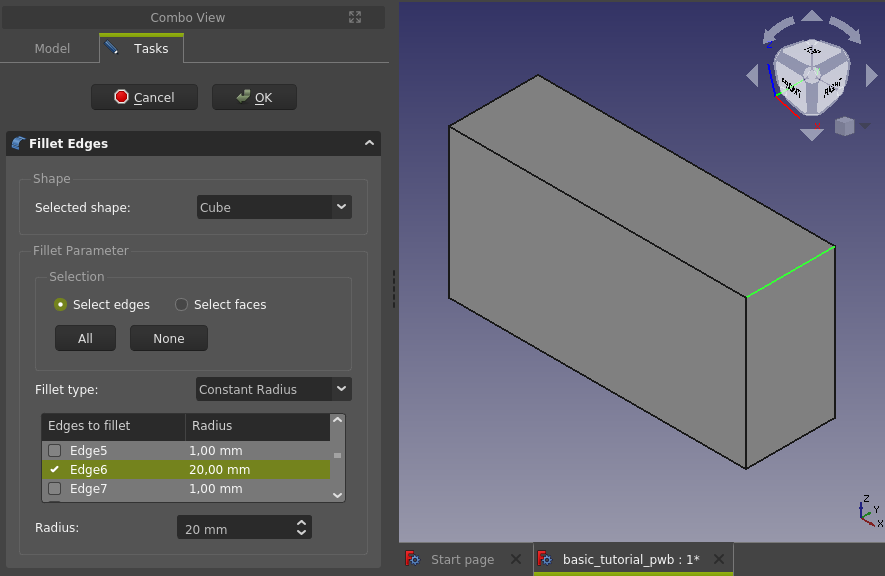
El "panel de tareas" se cierra y vuelves a la vista de árbol, que ahora tiene un objeto de redondeo en lugar del cubo anterior.
Visibilidad de los hijos
Haz clic en el signo más/circunferencia para expandir los elementos secundarios del redondeo, que en este caso es el cubo que creamos anteriormente, pero que aparece atenuado. Selecciona el cubo y pulsa la barra espaciadora; esto activa o desactiva su visibilidad, de modo que el cubo vuelve a ser visible y el icono ya no aparece atenuado. Para deseleccionar el cubo, haz clic en un área en blanco en la vista de árbol o en la vista 3D.
{kind=link}
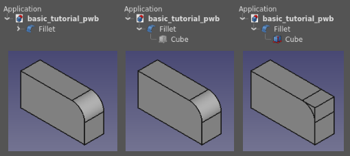
Crear el chaflán
A continuación, crearemos el chaflán de 30 grados. Para ello, activaremos o desactivaremos la visibilidad del cubo hijo del redondeo. En Part Workbench existe una herramienta de chaflán, pero en lugar de usarla, crearemos el chaflán con otro bloque y una operación booleana.
Crea un nuevo  Cube con dimensiones 60 x 30 x 30. Cambia el ángulo de colocación a -30 grados.
Cube con dimensiones 60 x 30 x 30. Cambia el ángulo de colocación a -30 grados.
{kind=link}
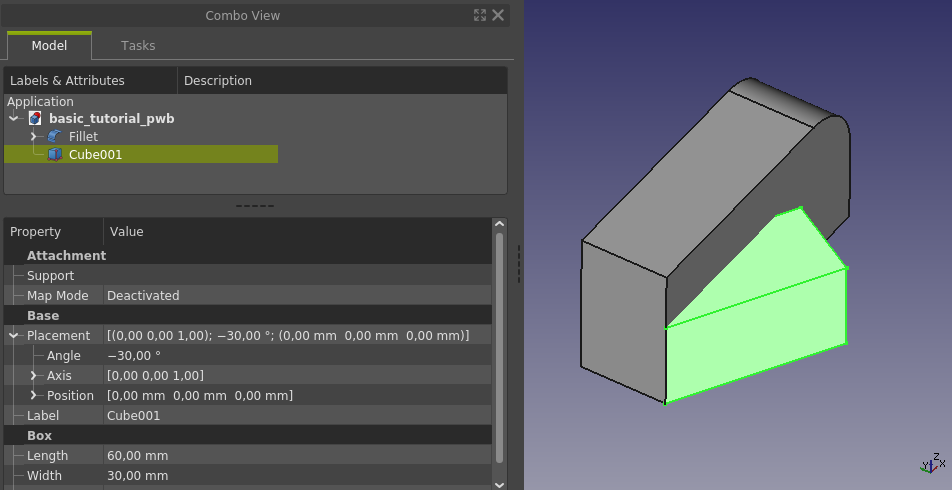
El ángulo de posicionamiento utiliza el vector de posicionamiento (Eje) como eje de rotación. El valor predeterminado es el eje z, que no coincide con la dirección deseada. Al cambiar el vector de posicionamiento al eje y, se obtiene la orientación deseada de la herramienta de corte para el chaflán.
{kind=link}
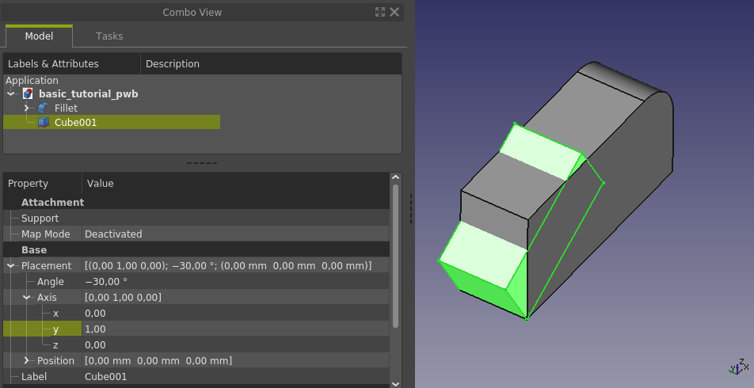
Se puede obtener la misma configuración con otros valores también; el ejemplo alternativo más sencillo de una configuración idéntica es un ángulo de +30 grados y un eje Y de -1.
Consola de Python
Además, es necesario ajustar la posición. Al observar el dibujo de la pieza terminada, no hay una dimensión directa que se pueda usar para la traslación hacia arriba. Dado que la dimensión hacia arriba es la que necesitamos, debemos calcularla. Usemos la consola de Python integrada para estos cálculos; se trata de trigonometría básica. Si la consola de Python de FreeCAD no está visible, haga clic con el botón derecho en un espacio vacío de la barra de herramientas y marque la opción "Consola de Python". Debería aparecer en el espacio de trabajo. Una vez allí, agregue también la vista de informe si aún no está visible. La vista de informe suele proporcionar información útil o incluso sugerencias sobre qué hacer a continuación con diferentes comandos.
{kind=link}
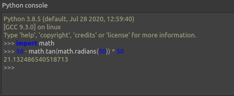
Tras importar el módulo math de las bibliotecas estándar de Python, podemos usar la fórmula (50 - math.tan(math.radians(30)) * 50) para calcular la distancia en el eje z que debe moverse el bloque. Copie el resultado de la fórmula desde la consola de Python y péguelo en la posición z de Cube001. La herramienta que se utilizará para el corte de chaflán ya está correctamente orientada y posicionada.
{kind=link}
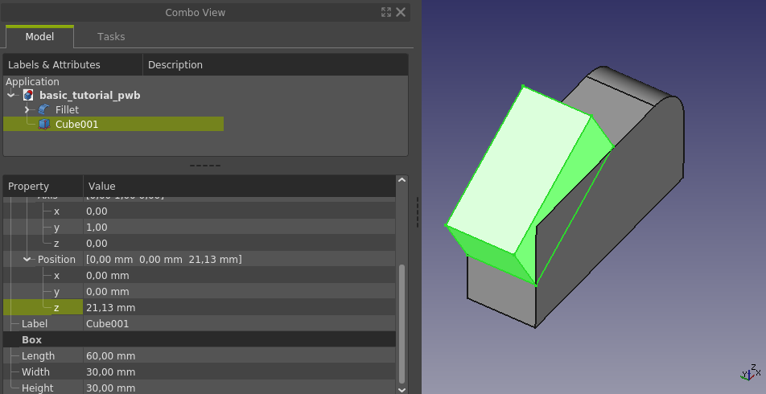
Expresiones
No es necesario usar la consola de Python para realizar el cálculo. En la mayoría de los casos, al trabajar con valores paramétricos numéricos, FreeCAD ofrece un acceso directo a una calculadora integrada. En FreeCAD, se llama Expressions. Para acceder al modo de expresiones, primero haga clic en el cuadro de selección para la posición Z; aparecerá un pequeño icono circular azulado en el lado derecho.
{kind=link}
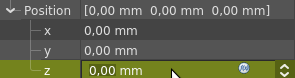
Al hacer clic en ese icono, se abre una nueva ventana, el "Editor de fórmulas", donde se pueden introducir fórmulas y expresiones, como se muestra a continuación. El uso de expresiones es una herramienta potente, ya que permite acceder a los parámetros del modelo, lo que hace que todos los parámetros del modelo estén disponibles como variables para su uso al crear una expresión. En resumen, en nuestra fórmula, en lugar de introducir el número 50 en el editor de fórmulas, podríamos introducir un "parámetro con nombre" que contenga el valor 50 del cubo, con la ventaja de que si cambiamos la "altura" del cubo, la posición del chaflán se ajustará automáticamente. El valor 50 en el modelo actual se denomina "Cube.Height", es decir, la propiedad "Height" de la función "Cube". Encontrará más información al respecto en la wiki.
{kind=link}
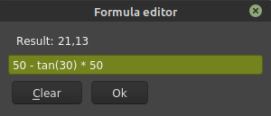
Para realizar el corte, primero seleccione Redondeo en la vista de árbol y luego, manteniendo presionada la tecla Ctrl (tecla Comando en Mac), seleccione el cubo creado (llamado Cube001). Suelte Ctrl y, finalmente, en la barra de herramientas, presione el botón  Cut. Su vista de árbol ahora debería ser nuevamente un solo objeto en la raíz llamado Cut.
Cut. Su vista de árbol ahora debería ser nuevamente un solo objeto en la raíz llamado Cut.
{kind=link}
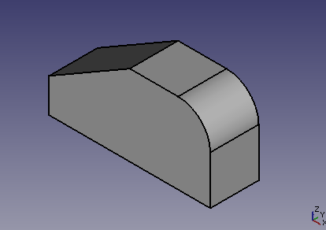
Las barras de herramientas
Una nota al margen sobre las barras de herramientas, ya que son la vía habitual para ejecutar comandos. Si bien existe una configuración básica para la disposición de las barras de herramientas, la disposición real en su ordenador podría no ser la ideal. En tales casos, es fácil ajustarla. Observe la sección superior de la siguiente imagen. Hay dos filas de barras de herramientas y solo se muestra un número limitado de botones de la barra de herramientas Part Workbench. La forma más sencilla de ver más botones de la barra de herramientas es maximizar la ventana de FreeCAD, a menos que ya esté maximizada, por supuesto.
Lo más habitual es ajustar la disposición de las barras de herramientas según tus necesidades y las características de tu ordenador. Para cambiar su posición, usa el tirador situado a la izquierda de cada barra. Simplemente haz clic y arrastra el tirador a la nueva ubicación. En la parte inferior de la imagen, se muestran las posiciones de las barras de herramientas ajustadas, revelando su contenido completo. Los cambios en la posición de las barras de herramientas se guardan entre sesiones.
{kind=link}
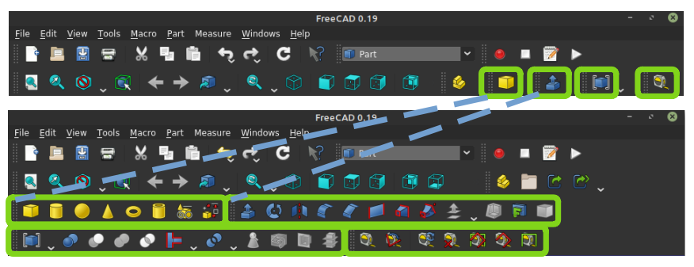
Crear el agujero
Para hacer el agujero, pulse el botón  Cylinder, establezca el radio en 5 mm y la altura en 50 mm.
Cylinder, establezca el radio en 5 mm y la altura en 50 mm.
{kind=link}
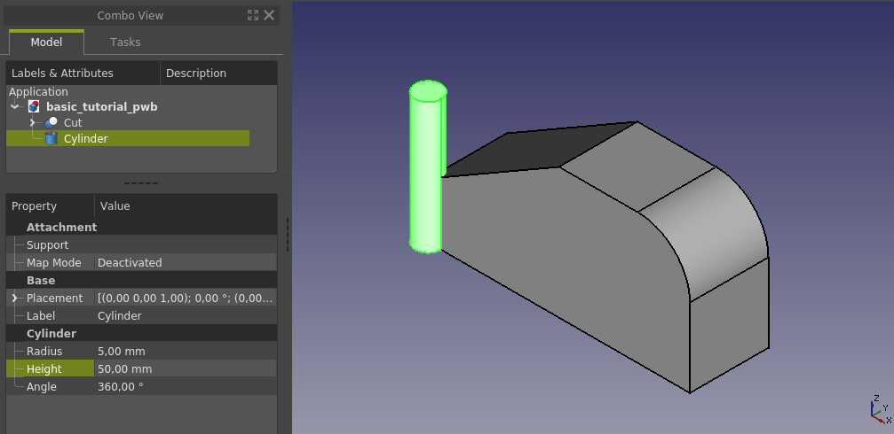
A continuación, debemos posicionar el agujero según las dimensiones del dibujo. Cambie la vista a la vista  Top, luego haga clic con el botón derecho en Cilindro en la vista de árbol y seleccione Transformar en el menú emergente.
Top, luego haga clic con el botón derecho en Cilindro en la vista de árbol y seleccione Transformar en el menú emergente.
{kind=link}
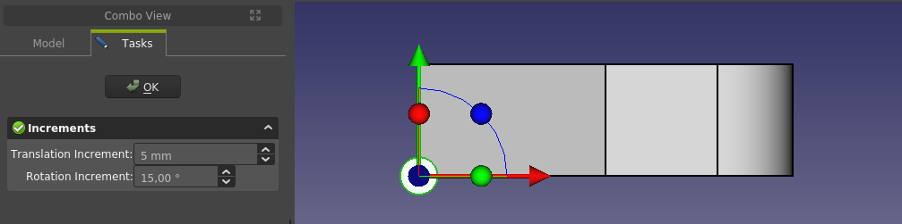
Cambia el Incremento de traslación a 5 y usa la flecha roja y verde para posicionar el cilindro en la posición correcta, moviéndolo 15 mm en y y 65 en x arrastrando los extremos de la flecha con el ratón. Haz clic en OK para cerrar el diálogo Transformar. Para hacer el agujero, presiona la tecla Ctrl y selecciona Corte y Cilindro en la vista de árbol, luego presiona el botón  Corte en la barra de herramientas. Tu vista de árbol debería tener de nuevo un solo objeto en la raíz llamado Cut001.
Corte en la barra de herramientas. Tu vista de árbol debería tener de nuevo un solo objeto en la raíz llamado Cut001.
¡Enhorabuena, el modelo ya está listo!
{kind=link}
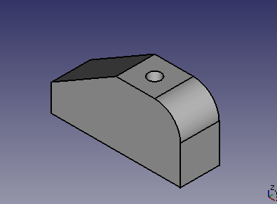
Una vez que tengamos listo el modelo básico, exploremos diferentes maneras de modificarlo. Algunos ejemplos están relacionados con la apariencia, las funciones adicionales o simplemente con una forma diferente de hacer lo mismo.
Cambiar el color y la transparencia
Existen varias maneras de cambiar la apariencia de los objetos. En este caso, utilizaremos la pestaña "Vista" en la sección de propiedades de la vista combinada. Primero, seleccione el objeto en la vista de árbol y luego edite cualquier propiedad, como el color de la línea, el color de la forma o la transparencia, mediante la pestaña "Vista" (ubicada en la parte inferior de la vista combinada).
{kind=link}
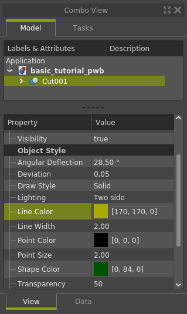
Lamentablemente, al seleccionar el objeto, resulta un poco difícil apreciar su aspecto final al ajustar la nueva apariencia. Para ver el resultado definitivo, hay que deseleccionar el objeto. Aquí se muestra el nuevo aspecto del modelo, donde ahora se puede apreciar el orificio pasante también en la vista isométrica. Otra forma de editar la apariencia es mediante el menú View →  Apariencia....
Apariencia....
{kind=link}
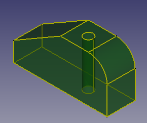
Otra forma de localizar el agujero
Guarda el archivo con un nombre nuevo. Luego, elimina el corte que añadió el agujero y vuelve a colocar el cilindro en la posición cero. Tu modelo debería verse como en la imagen de abajo, que es el punto de partida para usar una técnica diferente y ubicar el agujero en el centro de la cara superior. Observa que el color ha vuelto al gris predeterminado; el cambio de apariencia se aplicó al objeto cortado, que ahora está eliminado.
{kind=link}
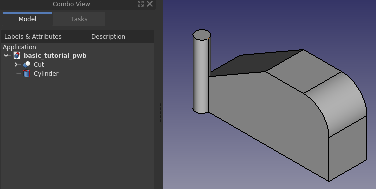
Esta vez se utilizará el  Draft Workbench para localizar el agujero. El agujero debe ubicarse como antes en el centro de la cara superior, que es el mismo que el punto medio de la diagonal de la cara superior.
Draft Workbench para localizar el agujero. El agujero debe ubicarse como antes en el centro de la cara superior, que es el mismo que el punto medio de la diagonal de la cara superior.
Comience cambiando el entorno de trabajo a Borrador, es posible que aparezca una rejilla en la vista 3D, la visibilidad de la rejilla se puede alternar con  Toggle Grid en la barra de herramientas. Al utilizar la funcionalidad snap en el Entorno de trabajo Borrador, es útil tener habilitados solo los tipos de ajuste de interés. En este caso, basta con dejar habilitados punto final, punto medio y centro de círculo, por lo que la configuración para el ajuste debería verse algo como lo siguiente.
Toggle Grid en la barra de herramientas. Al utilizar la funcionalidad snap en el Entorno de trabajo Borrador, es útil tener habilitados solo los tipos de ajuste de interés. En este caso, basta con dejar habilitados punto final, punto medio y centro de círculo, por lo que la configuración para el ajuste debería verse algo como lo siguiente.

Para encontrar el punto donde colocar el centro del cilindro, se podría trazar una diagonal como línea de referencia y usar el centro del cilindro y el punto medio de la diagonal para identificar los puntos entre los que moverse. Sin embargo, resulta que ni siquiera necesitamos trazar líneas de referencia, ya que podemos ajustarnos a la geometría sólida existente.
Seleccione el Cilindro en la vista de árbol (se pondrá verde en la vista 3D) y pulse el botón  Mover en la barra de herramientas. Se abrirá un panel de tareas para mover objetos; asegúrese de que Copiar esté desactivado.
Mover en la barra de herramientas. Se abrirá un panel de tareas para mover objetos; asegúrese de que Copiar esté desactivado.
{kind=link}
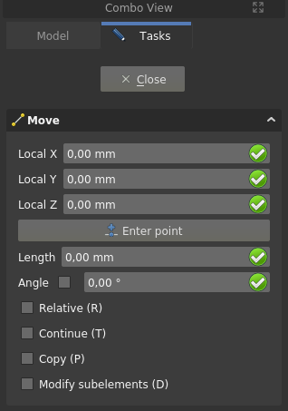
A continuación, mueva el ratón a la cara superior del cilindro para que vea un "punto blanco" en el centro del círculo, como se muestra en la imagen de la izquierda. Esto, junto con el símbolo central que aparece junto al puntero del ratón, significa que al hacer clic con el botón izquierdo del ratón, el cursor se ajustará al punto blanco.
{kind=link}
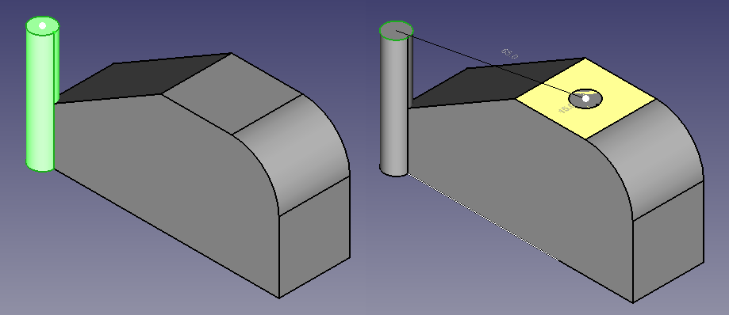
Cuando aparezca el punto blanco en la cara superior, haga clic con el botón izquierdo del ratón y repita el proceso para la cara cuadrada superior del sólido principal, como se muestra en la imagen de la derecha. Confirme la selección haciendo clic con el botón izquierdo del ratón. La función de ajuste utiliza el centro de masas para cualquier tipo de cara, y en este caso, el centro de masas coincide con el centro geométrico que se busca. Como habrá notado, el movimiento del cilindro está animado, por lo que siempre podrá ver lo que va a suceder.
Repitiendo el paso del corte booleano anterior, se creará el orificio pasante que completa el modelo.
Hacer un agujero avellanado
Vuelva al Part Workbench y cree un "cono" presionando el botón  Cone en la barra de herramientas. Cambie "radius1" a 0 mm y "radius2" a 7 mm; esto dará un "avellanado" de 2 mm en el radio. Hacer que la "altura" del cono sea de 7 mm da como resultado un ángulo superior del cono de 90 grados, o un ángulo de avellanado de 45 grados. Vale la pena señalar que nuevamente también se podría usar la operación
Cone en la barra de herramientas. Cambie "radius1" a 0 mm y "radius2" a 7 mm; esto dará un "avellanado" de 2 mm en el radio. Hacer que la "altura" del cono sea de 7 mm da como resultado un ángulo superior del cono de 90 grados, o un ángulo de avellanado de 45 grados. Vale la pena señalar que nuevamente también se podría usar la operación  Chamfer.
Chamfer.
Al trabajar con FreeCAD, te encontrarás constantemente con diversas maneras de lograr un resultado aparentemente idéntico. No existe una verdad absoluta sobre cuál es la forma correcta de conseguir un resultado final concreto; sin embargo, en un contexto específico, un flujo de trabajo determinado puede ser más flexible y permitir el uso de funciones posteriores, entre otras cosas. La forma en que creas modelos 3D evolucionará con el tiempo a medida que aprendas más sobre las funciones y capacidades de FreeCAD.
{kind=link}
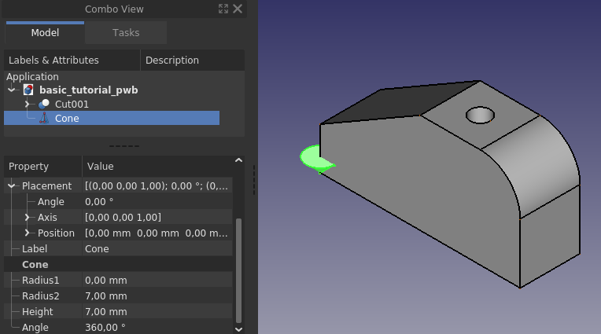
Traslada el cono de forma que quede concéntrico con el orificio y coplanar con la superficie superior sólida principal. Para ello, utiliza cualquiera de los métodos descritos anteriormente en este tutorial.
En la imagen de abajo, el movimiento se realiza con Transform y un ajuste de incremento de 1 mm, ya que el cono tiene una dimensión característica de 7 mm, lo que significa que el ajuste de incremento anterior de 5 mm no permitirá un posicionamiento correcto. La representación  Wireframe se utiliza para ver más fácilmente que el cono está en la posición correcta.
Wireframe se utiliza para ver más fácilmente que el cono está en la posición correcta.
{kind=link}
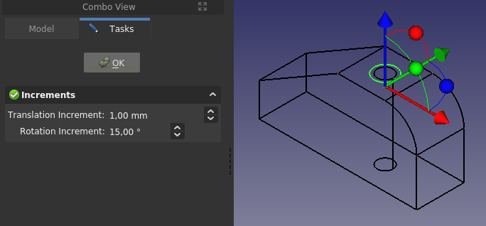
Para completar el modelo, usemos el comando  Boolean en lugar de seleccionar primero los objetos y aplicar una operación booleana específica. Presione el botón de la barra de herramientas y se abrirá un panel de tareas como se muestra en la imagen de abajo a la izquierda.
Boolean en lugar de seleccionar primero los objetos y aplicar una operación booleana específica. Presione el botón de la barra de herramientas y se abrirá un panel de tareas como se muestra en la imagen de abajo a la izquierda.
{kind=link}
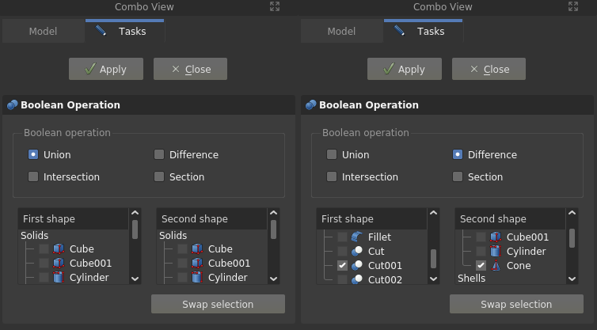
Se deben especificar tres elementos: el "tipo de operación", la "primera forma" y la "segunda forma". Se supone que se cortará el cono, esto se llama "Diferencia" en este comando, en lugar de "Cortar". La primera forma es nuestra Cut001, que aparece en "compuestos", ya que está construida a partir de varios sólidos. La segunda forma es el Cono. Una vez que se hayan realizado los ajustes correctos para el comando, haga clic en el botón Apply para ejecutar la operación. Todo esto se ha hecho en la imagen de la derecha, y allí también se puede ver que ahora aparece un "compuesto" Cut002, que es la forma final de nuestro modelo. Después de haber cambiado la apariencia, el modelo final se ve así.
{kind=link}
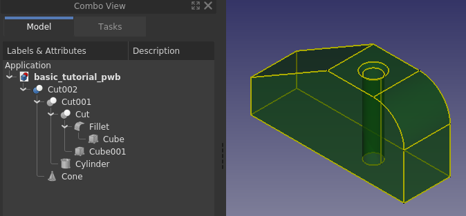
Una forma diferente de posicionar el chaflán
Haga "guardar como" con un nuevo nombre. Luego elimine las funciones para que el modelo se vea como se muestra a continuación.
{kind=link}
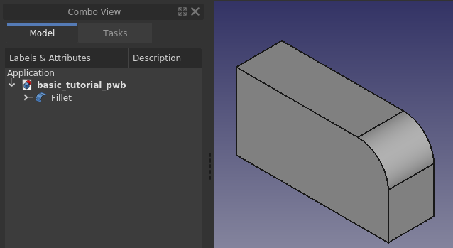
Crea un Cubo con dimensiones 30x30x60, que quede como se muestra a continuación.
{kind=link}
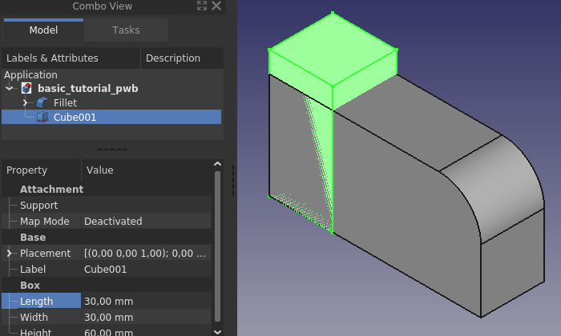
Cambie la 'posición girando primero -120 grados alrededor del eje Y.
{kind=link}
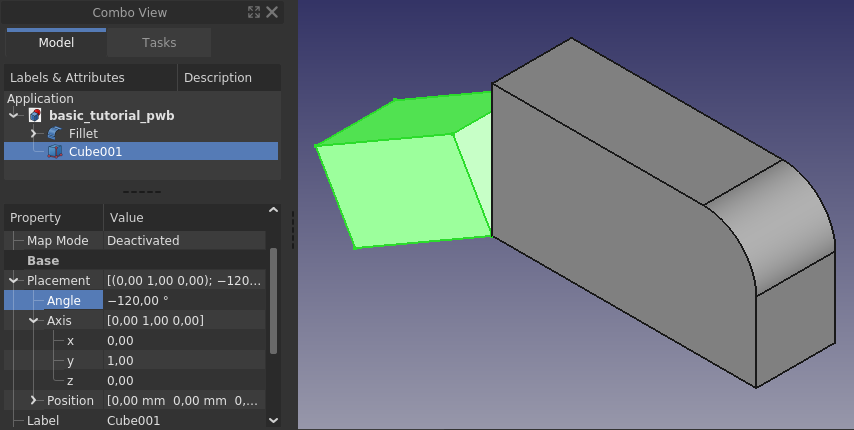
Finalmente, cambie la posición a X=50 y Z=50 y haga el corte para producir el mismo resultado que antes.
{kind=link}
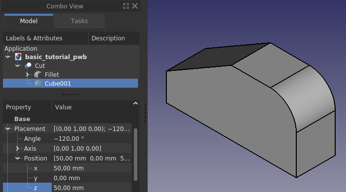
Esto subraya una vez más que siempre existen varias maneras de obtener el mismo resultado, un tema recurrente en el modelado 3D. En el caso de geometrías o sólidos básicos, se pueden usar diferentes entornos de trabajo y comandos en FreeCAD, manteniendo la misma forma externa. Simplemente hay que encontrar el conjunto de herramientas y el flujo de trabajo que mejor se adapten a cada usuario. El modelado 3D paramétrico es un proceso de aprendizaje constante que requiere práctica para dominarlo.
Editar dimensiones, colores de caras y TNP
FreeCAD es un modelador 3D paramétrico que permite modificar cualquier posición o dimensión, y el modelo se actualiza automáticamente. En general, esto funciona, pero es posible dañar un modelo al editarlo; por ejemplo, cuando un redondeo se basa en una arista que ya no existe debido a la edición. Cuando un modelo se daña durante la edición, se denomina "Problema de Nomenclatura Topológica (TNP)".
Experimenta cambiando las dimensiones y la ubicación para ver si puedes dañar el modelo. No olvides recalcularlo después de los cambios si es necesario. Esto se puede hacer con el botón  Refresh en la barra de herramientas. Si el icono está atenuado, no es necesario actualizar el objeto.
Refresh en la barra de herramientas. Si el icono está atenuado, no es necesario actualizar el objeto.
Reposicionar el cilindro
Aquí se muestra un ejemplo del cilindro desplazado del centro a un lado del cuerpo principal mediante la herramienta "Transformar". Como se puede apreciar en la imagen, el cono permanece en su posición original, sin verse afectado por el movimiento del cilindro.
{kind=link}
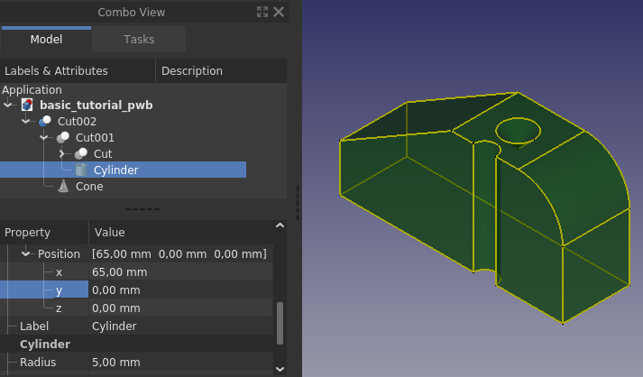
Al mover el cilindro y perforar la superficie exterior, en la versión 0.19 se pierde parte de la configuración de color del modelo. FreeCAD restablece la configuración predeterminada del usuario para los colores y la transparencia de las formas en la vista 3D; sin embargo, la forma Cut002 conserva los colores y la transparencia que tenía anteriormente, como se puede apreciar en la imagen a continuación.
Corrigiendo los colores
{kind=link}
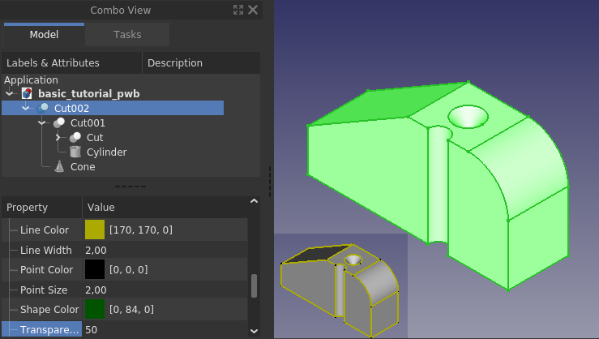
Aquí tienes una forma de recuperarlo. Primero, cambia la transparencia un nivel hacia arriba o hacia abajo y luego vuelve a cambiarla; esto restaura la transparencia. Puedes hacer lo mismo con el color de la forma. Otra forma de recuperar el color es hacer clic con el botón derecho en Cut002 en la vista de árbol y seleccionar Establecer colores en el menú contextual. En el panel de tareas que aparece, haz clic en Establecer como predeterminado; esto restaura el color al que se configuró en las propiedades de la vista.
{kind=link}
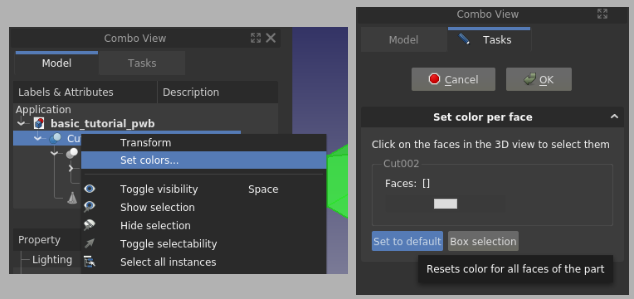
El comando Establecer colores le permite seleccionar caras individuales de una forma y establecer un color único en las caras seleccionadas.
Múltiples sólidos
Otro ejemplo donde el cubo que forma el chaflán ha sido trasladado y rotado.
{kind=link}
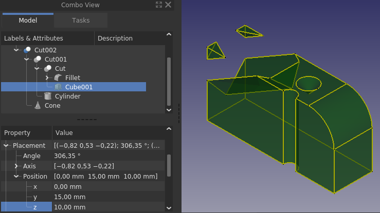
Como se puede observar al reposicionar el chaflán de esta manera, el resultado final son "3 sólidos disjuntos". Part Workbench permite esto, PartDesign Workbench no; o bien se produce un "error de sólidos múltiples" o simplemente no se renderizan todos los sólidos.
TNP
Volviendo al modelo original ya terminado, exploremos cómo se nombran los rostros.
Aquí se ha activado selection view, solo para mostrar claramente qué está seleccionado y qué no, también se ha ajustado el color para que la selección sea más fácil de ver.
{kind=link}
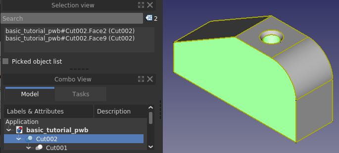
Al seleccionar una cara lateral y la cara interior del cilindro, se las denomina internamente cara "2" y "9", donde la cara "2" es la cara lateral. La numeración de las caras puede variar.
Al mover el cilindro de manera que la cavidad quede en la cara lateral y realizar la selección de caras, se obtiene un número diferente para la cara cilíndrica.
{kind=link}
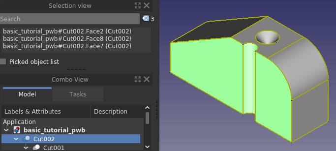
La cara 2 es el lado derecho de la cara 2 original, el lado izquierdo de la cara 2 anterior ahora es la cara 8. La parte cilíndrica era la cara 9, pero ahora es la cara 7. FreeCAD reasigna la numeración y el orden no necesariamente se conserva. El recuento total de caras en el primer modelo es 10, en la versión con la cara cilíndrica perforando la cara lateral, el recuento total de caras es 11. Así que, obviamente, la numeración de las caras tiene que cambiar cuando cambia la llamada "topología". Probablemente esto parezca un detalle minucioso, pero resulta ser bastante importante en CAD 3D paramétrico. Imagine que ha utilizado la cara cilíndrica como referencia para otra característica; solía llamarse cara 9, pero ahora se llama cara 8. La referencia a la superficie cilíndrica deseada se pierde. Dado que FreeCAD, al menos en las versiones actualmente publicadas, no realiza un seguimiento de la "cara prevista", sólo realiza un seguimiento de la "cara numerada", un modelo se rompe cuando se hace referencia a una cara que luego se renumera. Esto se llama TNP, Problema de denominación topológica.
Se recomienda aprender a evitar modelos defectuosos debido al problema de nomenclatura topológica (TNP). Para obtener más información, consulte elsewhere on the wiki, que se centra principalmente en un flujo de trabajo basado en bocetos, aunque el mecanismo subyacente es el mismo. La renumeración descrita aquí para las caras se aplica a todas las entidades geométricas: caras, aristas y vértices.
Organizando el árbol de una manera un poco diferente
Guarda el archivo con un nombre nuevo. Luego, elimina todos los cortes para obtener un modelo similar al que se muestra a continuación.
{kind=link}
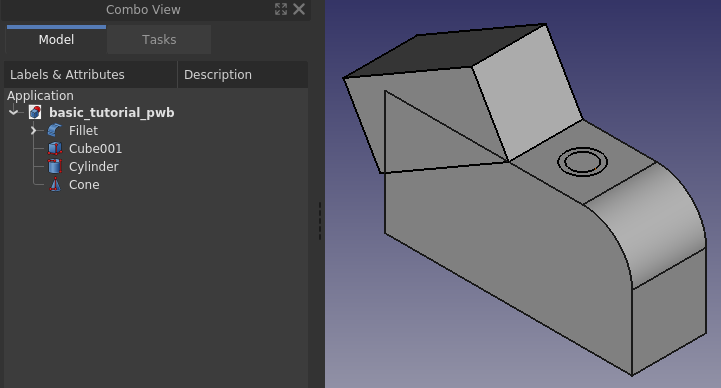
Al usar el Part Workbench y modelar sólidos con muchas características, la estructura de árbol de un sólido puede resultar difícil de descifrar. Hasta ahora, hemos creado una primitiva/característica y le hemos aplicado una operación booleana. En el Part Workbench, se pueden agrupar primitivas en una sola operación booleana. En nuestro caso, tenemos el cilindro, el cono y el cubo, que son todos el resultado de una operación booleana de corte.
En lugar de hacer un corte para cada primitiva, podemos primero aplicar una unión booleana,  Fuse las primitivas destinadas al corte booleano, y luego hacer el corte entre el Fillet y el Fusion.
Fuse las primitivas destinadas al corte booleano, y luego hacer el corte entre el Fillet y el Fusion.
Con este enfoque, la vista de árbol termina luciendo como se muestra a continuación, que es simplemente una forma diferente de construir el mismo modelo. Compare esto con la vista de árbol original, ninguna es mejor que la otra; sin embargo, al crear modelos más complejos, un enfoque sobre el otro puede tener beneficios en la facilidad de modificar/reorganizar el modelo si es necesario.
{kind=link}
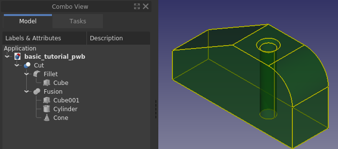
Para finalizar
Tras completar el tutorial, ya conoces la interfaz de usuario de FreeCAD y has aprendido los conceptos básicos del Part Workbench. Ahora deberías poder crear modelos sencillos a tu gusto. El Part Workbench es uno de los entornos de trabajo que se pueden usar para crear sólidos; el PartDesign Workbench es otro. Los diferentes entornos de trabajo tienen distintas capacidades y flujos de trabajo. Aprender FreeCAD por completo, especialmente considerando todos los complementos y macros, lleva años, así que sigue explorando nuevas y diferentes formas de crear modelos. Consulta los distintos tutoriales de la wiki; el aprendizaje nunca termina al trabajar con FreeCAD. Se recomienda que aprendas a usar sketches y PartDesign Workbench si tu objetivo es crear sólidos. Si tu objetivo es modelar edificios, deberías aprender los entornos de trabajo Draft y Arch.
Por último, FreeCAD es un proyecto creado por voluntarios en su tiempo libre. Si deseas contribuir al desarrollo de FreeCAD, considera colaborar con contribuir, por ejemplo, mejorando la documentación.